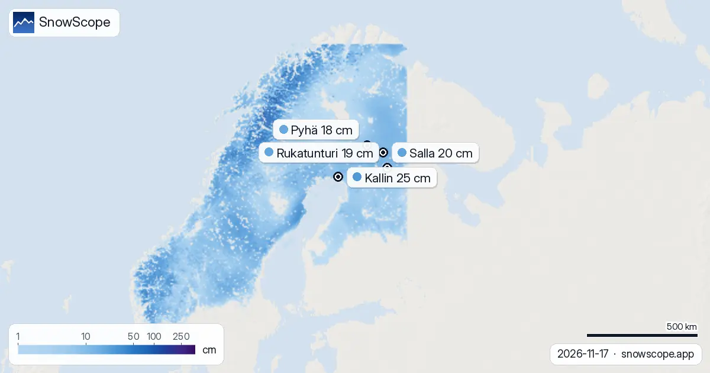

Paljonko lunta on Suomessa? Lumipeite ja ennuste, 17. marraskuuta 2026
Suomessa lumen alla on tänään noin 178 550 km² (tiistai 17. marraskuuta). Se on 21 190 km² enemmän kuin eilen.
Katso kohteen Kallin lumiennuste reaaliajassa SnowScope-sovelluksessaLumensyvyys, puuterihälytykset ja 3D-kartta, ilmaiseksi.
Lumipeite tänään
Viikko sitten luku oli 52 200 km², joten lumipeite on kasvanut 126 350 km². Lumi ulottuu alavimpiin maihin ja rannikolle asti.
| Country | White | Deepest resort | Next 7 days |
|---|---|---|---|
| Finland | 59 % | Kallin | 15 cm |
| Sweden | 79 % | Abisko | 25 cm |
| Norway | 87 % | Riksgränsen | 52 cm |

Lumensyvyys korkeuden mukaan
Keskimääräinen lumensyvyys korkeusvyöhykkeittäin: 0–500 m: keskimäärin 4 cm (59 % lumen peitossa); 500–1 000 m: keskimäärin 13 cm (99 % lumen peitossa); 1 000–1 500 m: keskimäärin 38 cm (100 % lumen peitossa).
Mitä se tarkoittaa rinteessä
Uusi lumi pohjan päällä antaa pehmeitä käännöksiä ylhäällä; alempana on vielä laikukasta.
Missä satoi uutta lunta
Kolmen päivän summat yltävät lukemaan 10 cm. Eniten: Kainuun vaarat ja Rukan tunturit.
Pelkästään viimeisen vuorokauden aikana satoi enintään 6 cm.
Parhaat hiihtokeskukset nyt
Eniten lunta ylärinteillä: Kallin, 25 cm.
Hiihtokeskuksia, joiden ylärinteillä on lunta: 28/67.
Seuraavina: Salla (20 cm), Rukatunturi (19 cm), Pyhä (18 cm) ja Suomutunturi (17 cm).
Kallin: 6 cm uutta lunta kolmessa päivässä ja vielä enintään 10 cm ennen päivää perjantai, 20. marraskuuta.
Tulevat päivät
Uuden lumen ennuste: enintään 11 cm kolmessa päivässä ja enintään 15 cm seitsemässä päivässä.
Lumisin päivä: keskiviikko, 18. marraskuuta, enintään 8 cm.
Vinkkejä laskijoille
- Lue paikallinen lumivyöryennuste ennen rinteiden ulkopuolelle lähtöä.
Näistä luvuista
Hiihtokeskusten lumensyvyydet ovat syvin lumi keskuksen ylärinteillä SnowScopen lumimallin mukaan (noin 1 km, ajo 17. marraskuuta); ne ovat arvioita alueelle, eivät mittaus yhdessä pisteessä. Asemien arvot ovat mittauksia näytettynä päivänä. Ennusteet voivat muuttua. Lue aina virallinen lumivyöryennuste ennen rinteiden ulkopuolelle lähtöä.
Viittaa tähän raporttiin
Tutkimukseen, opetukseen tai mediaan: luvut ja kaaviot ovat vapaasti käytettävissä CC BY 4.0 -lisenssillä tällä lähdeviitteellä.
SnowScope (2026), Paljonko lunta on Suomessa? Lumipeite ja ennuste, 17. marraskuuta 2026, https://snowscope.app/blog/fi/2026/11/finland-snow-report-17-november-2026.html, luettu 2026-11-17
SnowScope (Atlas Labs). (2026, November 17). Paljonko lunta on Suomessa? Lumipeite ja ennuste, 17. marraskuuta 2026. SnowScope snow reports. https://snowscope.app/blog/fi/2026/11/finland-snow-report-17-november-2026.html
BibTeX
@misc{snowscope2026finlandsnowreport17novem,
author = {{SnowScope (Atlas Labs)}},
title = {Paljonko lunta on Suomessa? Lumipeite ja ennuste, 17. marraskuuta 2026},
year = {2026},
month = nov,
howpublished = {\url{https://snowscope.app/blog/fi/2026/11/finland-snow-report-17-november-2026.html}},
note = {Published 2026-11-17 12:53 UTC; accessed 2026-11-17}
}· CC BY 4.0 · Menetelmät, data ja työkalut →
Kallin: lumi ja lämpötila korkeuden mukaan, tämä talvi ja viime talvi (työkalut) →
Seuraa: Kallin
Ilmainen: viesti, kun uutta lunta on tulossa, ja ennuste joka aamu.